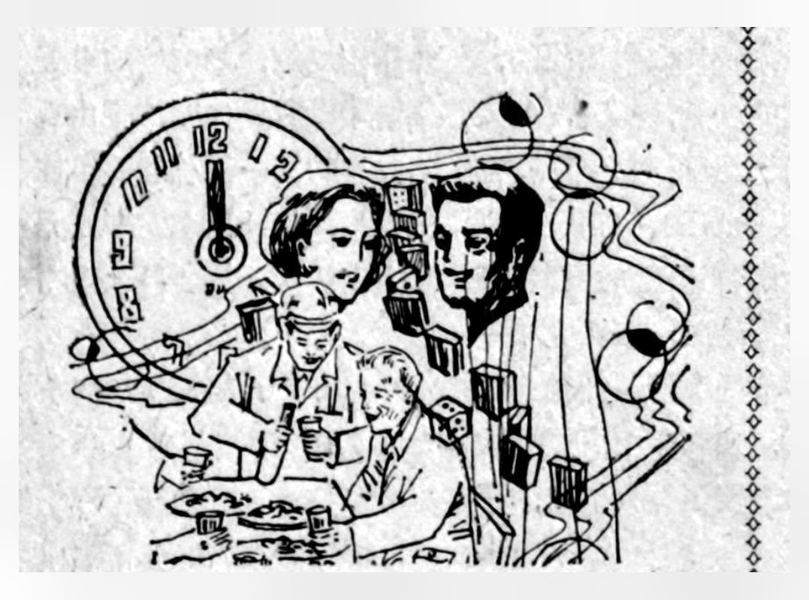

佚名 《人事》1989年第9期（总第48期），第40页
熬夜（题图）
Staying Up All Night (title illustration)
- Passage illustrated
罗瑜开门见山地说：“我要上美国考察农业，经费不足，请二位大财东助一臂之力！……”万宝来腆着肚皮哈哈大笑了：“没问题，小意思！咱这产品再紧俏也不在乎你书记用个百八十吨！”
Luo Yu came straight to the point: “I'm going to America to study agriculture and the funds are short — I'd like you two big moneybags to lend a hand!…” Wan Baolai stuck out his belly and roared with laughter: “No problem, a trifle! However scarce our product is, we won't miss the hundred-odd tons you'll use, Secretary!”From the short story 熬夜 (“Staying Up All Night”), third in the series “The Fall of a Rising Star,” by Zhang Min, on the same page. 张旻《熬夜》（小说，新星陨落记之三），同页
- Description
- Title illustration for the story: a clock at midnight, a man and a woman cheek to cheek, men drinking over a table of dishes, and mahjong tiles tumbling across the scene.
- Note
- In the story the reforming municipal Party secretary Luo Yu, praised for his new “pragmatic” report, spends the night with his mistress, collects “sponsorship” from two enterprise heads for a study trip to America, plays mahjong over Maotai and Zhonghua cigarettes, and pockets ten thousand yuan from a village head before flying off.
- Artist
- Unattributed 佚名
- Published in
- 《人事》1989年第9期（总第48期）, p. 40
- Themes
- Privilege · Gifts and banquets · Story illustrations

Cite
Unattributed, “熬夜（题图）” [Staying Up All Night (title illustration)], Renshi (Personnel) 《人事》, 1989, no. 9, p. 40.